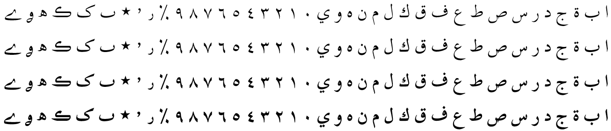

Scheherazade New - Design
Scheherazade New provides a “simplified” rendering of Arabic script, using basic connecting glyphs but not including a wide variety of additional ligatures or contextual alternates (only the required lam-alef ligatures). This simplified style is often preferred for clarity, especially in non-Arabic languages, but may not be considered appropriate in situations where a more elaborate style of calligraphy is preferred.
Four fonts from this typeface family are included in the Scheherazade New release:
- Scheherazade New Regular
- Scheherazade New Medium
- Scheherazade New SemiBold
- Scheherazade New Bold
Type Samples
Type samples showing some of the inventory of glyphs can be found here: Scheherazade New Type Sample.
Examples of some text is shown below.
Character Set
For a complete list of characters included in Scheherazade New, see Character Set Support.
Honorific Ligatures
For a complete list of honorific ligatures included in Scheherazade New, see Honorific Ligatures.
Rendering the Allah ligature
In certain types of literature, the name Allah and words related to this name are given unique rendering. For a list of the rendering rules, see Rendering the Allah ligature.
Font Features
Alternate glyphs that are available through features are demonstrated in the Features document.
SIL Global is the creator of the Scheherazade fonts, and is the owner of all proprietary rights therein.
Scheherazade is a trademark of SIL Global.